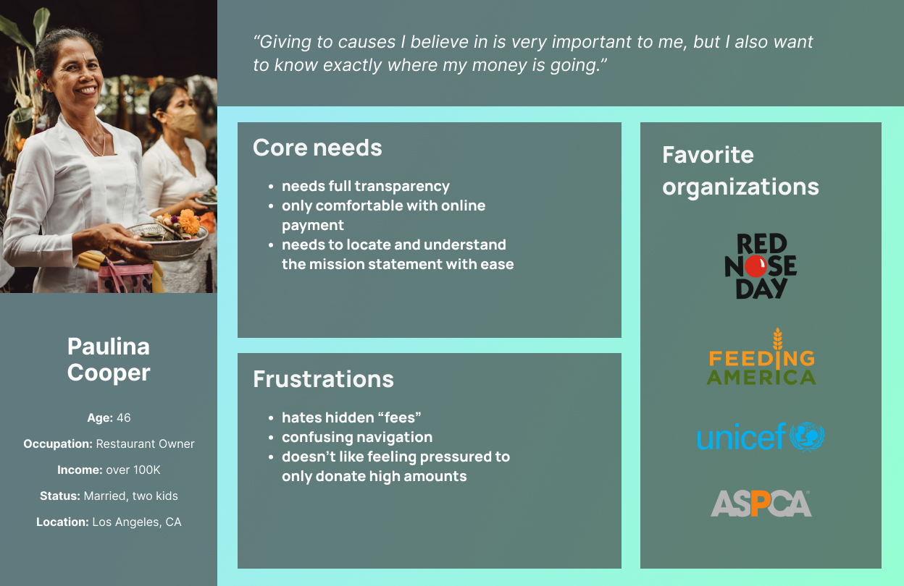
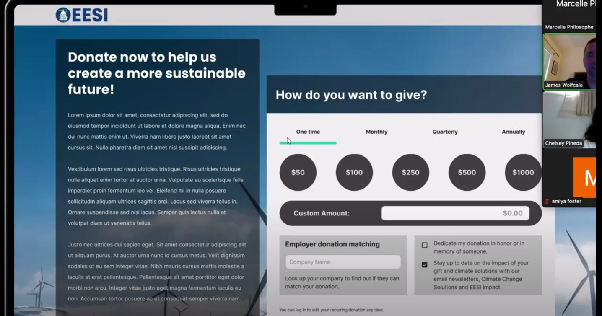
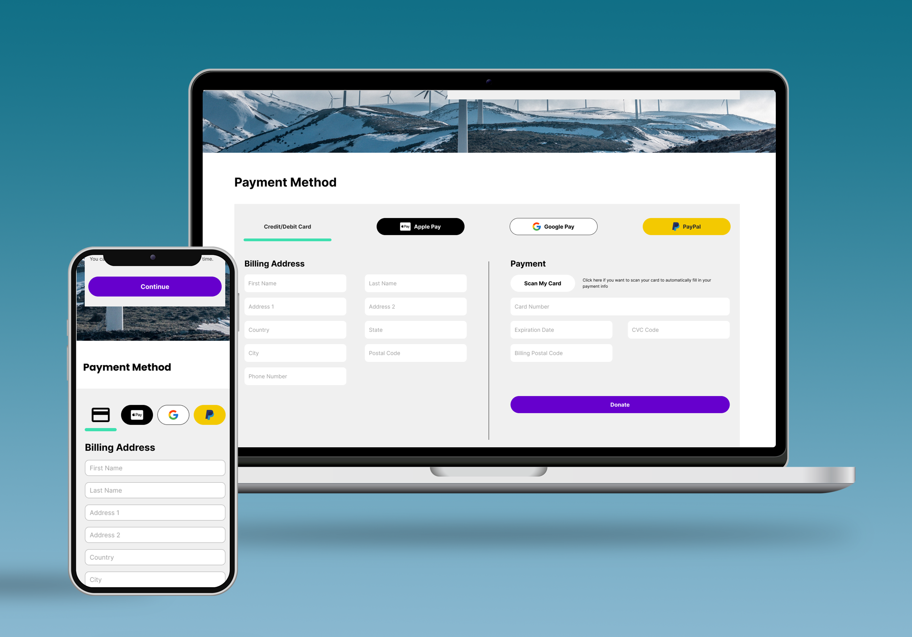

EESI Website Redesign
Responsive website redesign for the Environmental and Energy Study Institute (EESI) with a focus on the donation system.
Team Size
4
Roles
User Researcher, Information Architect, Interaction Designer, Presenter
Deliverables
High-Fidelity Prototype - Desktop & Mobile Versions
Tools
Figma, FigJam, Excel, Word, Powerpoint, Trello
01. Understanding EESI
To start this project, my group chose a nonprofit organization’s website to redesign. We chose the Environmental and Energy Study Institute (EESI), a nonprofit dedicated to advancing policies and solutions for climate change and energy/environmental challenges to create a more sustainable world. After conducting a heuristic evaluation, we found that donations were a main call-to-action, so we decided to make this the focus of our redesign, alongside creating stronger information architecture and site branding.
We created a short interview plan for users and stakeholders. Our focus with the user interview questions was understanding motivations and pain points for donating to causes, while our focus with stakeholder questions was figuring out the EESI’s goals with their website and uncovering their frustrations with motivating users to move to the site’s call-to-action(s). We collected interview data from four users.
02. User Needs
Our data showed that users need to understand the nonprofit’s mission as well as the purpose behind donating because they want to be sure that the nonprofit’s goals align with their values and that their donations will help create a far-reaching impact for a good cause. We also found that users wanted to know exactly where their money was going.
Image of our affinity diagram from the four user interviews.
Persona based on our research; Paulina believes in donating to causes that are important to her, but she must know where her money is going and what it will be used for.
Problem Statement
EESI's website was designed to motivate users to donate by showcasing the organization’s role in advancing environmental policymaking, education, and volunteer work. We have observed that the website isn’t meeting these goals, which is causing a lack of customer donations. How might we improve EESI.org so that our customers understand the purpose behind donating to increase the amount of money donated to EESI?
03. Redefining the Donation Page
As a group, we began to ideate potential solutions related to the donation page and navigation. We decided to include:
- Donate button highlighted in navigation bar
- Termination date for recurring payments
- Incentivize users to donate by including information on donation page explaining the purpose behind donations
- More streamlined color palette for better branding (blue, green, purple)
I Like, I Wish, What If? process; we ended up condensing the features we created from the brainstorming process quite a bit.
One of the first things we noticed about the original site was the complexity and abundance of sections in the navigation bar, so one of our main priorities was to simplify and condense the navbar. We took all of the primary and secondary pages of the site, created cards for them, and grouped them based on similarities in topic to narrow down the primary navigation to four sections: About; Get Involved; News & Publications; Resources.
End result of our card sorting process to improve the primary navigation for EESI.
Alongside this, we created a user flow detailing the path a user would take to make a donation through the website starting from the homepage. This included:
- Choosing donation frequency
- Choosing donation amount (fixed or custom)
- Setting end date for recurring payments
- Payment method (credit/debit card, PayPal, Apple Pay)
User flow from homepage to successful completion of the donation page.
04. User Testing
Once we created the first version of our desktop prototype, we decided to test the design with five different users. For these tests, we focused on the donation flow and asked users to:
- Choose a donation amount
- Set up a recurring payment
- Complete payment using Apple Pay
All users found the overall design and structure of the donation flow intuitive and were able to successfully donate.
Screenshot from one of our user tests.
After we completed user testing for the mobile prototype, we found that our design was successful in creating an improved, streamlined user interface. Our users were able to fulfill the given tasks with ease in a timely manner, and likewise expressed that they felt thoroughly informed about EESI’s mission, and how their donation makes an impact. In conclusion, our team’s original goals for our EESI.org re-design were successfully met.
05. Final Prototype
